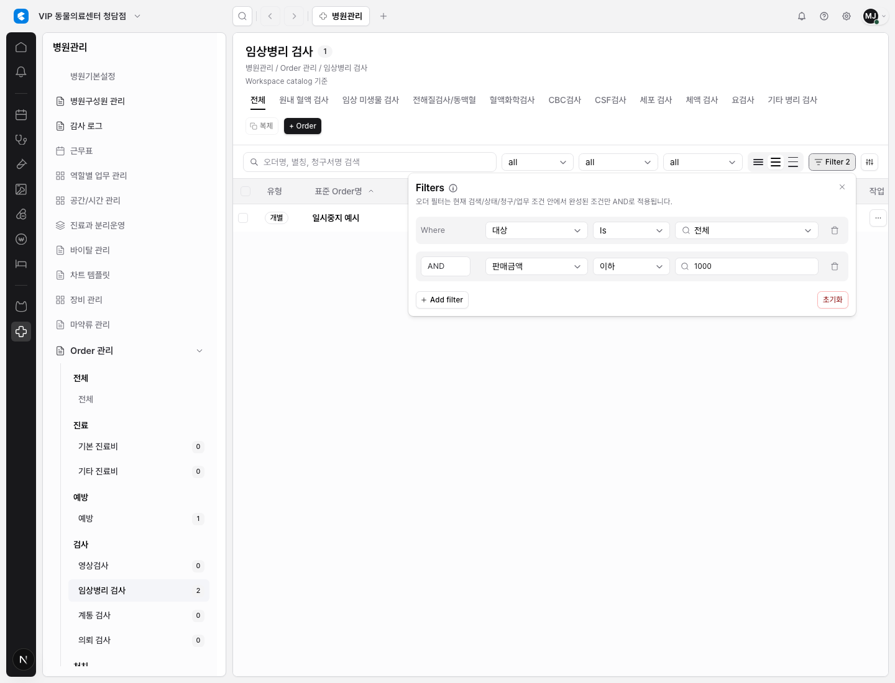

Project 13 / DEN-297
병원관리 Order Catalog 필터 UI를 공용 Advanced Filter Builder로 이전
병원관리 Order catalog 테이블이 기존 feature-local 필터 UI 대신 공용
EmrTableFilterBuilder를 사용하도록 변경됐다. 이로써 billing, chart/order,
customer, hospital admin order catalog가 같은 필터 builder 규칙을 공유한다.
무엇이 바뀌었나
- Order catalog의 로컬 필터 builder를 제거하고 공용 builder/model helper를 적용했다.
- 완성된 field/operator/value 조건만
Filter N과 결과 필터링에 반영된다. - 처음 열면 조건 row 하나가 draft 상태로 보이고, 미완성 row는 결과에 영향을 주지 않는다.
- 기존 카테고리, 검색, 사용여부, 청구, 업무유형 필터를 먼저 적용한 뒤 advanced filter가 AND로 적용된다.
- 테이블 헤더 정렬은 기존처럼 단일 컬럼 정렬만 유지하고, 필터는 섹션 action 영역의 Filter 버튼에서 연다.
- row 선택, row action, 상세 drawer, mock/session 기반 workspace catalog 흐름은 유지했다.
왜 중요한가
병원관리 Order catalog는 customer와 함께 admin 성격의 대표 테이블이다. 이번 변경으로 Project 13의 주요 채택 화면 모두가 같은 공용 advanced filter builder를 쓰게 되어 QA 기준과 사용 방식이 한 번 더 정리됐다.
변경 파일
src/features/hospital-admin/module.tsxtests/hospital-admin.spec.tsdocs/design/system/table-sort-filter-behavior.mddocs/work/index.mddocs/work/design-system/DESIGN-SYSTEM-PR-037-hospital-admin-advanced-filter-builder-migration.mddocs/completed/design/evidence/2026-05-26-den-297-hospital-admin-advanced-filter-builder.png
검증 결과
PLAYWRIGHT_BASE_URL=http://127.0.0.1:3109 npx playwright test tests/hospital-admin.spec.ts -g "hospital admin order catalog supports single sort and section filter builder" --reporter=line통과PLAYWRIGHT_BASE_URL=http://127.0.0.1:3109 npx playwright test tests/hospital-admin.spec.ts --reporter=line통과, 9 passednpx tsc --noEmit통과- mock-auth Playwright screenshot evidence 캡처 완료
npm run docs:check통과git diff --check통과
주의할 점
npx eslint src/features/hospital-admin/module.tsx tests/hospital-admin.spec.ts는 기존 dirty worktree의react-hooks/set-state-in-effect오류로 실패했다.npm run lint도 같은 오류 1건 때문에 실패했고, 그 외에는 기존 warning만 남아 있다.- 저장된 view/filter, active chip row, 서버/DB/Supabase live validation, RLS, migration, server-side filtering은 여전히 제외다.
Evidence
docs/completed/design/evidence/2026-05-26-den-297-hospital-admin-advanced-filter-builder.png

다음 단계
승욱 리뷰 후 문제가 없으면 DEN-297을 Done으로 이동하면 된다. 이후 범위를 넓힐 때는 아직 적용되지 않은 테이블을 별도 이슈로 목록화하고, saved view나 서버 필터링은 별도 제품 범위로 분리하는 편이 안전하다.